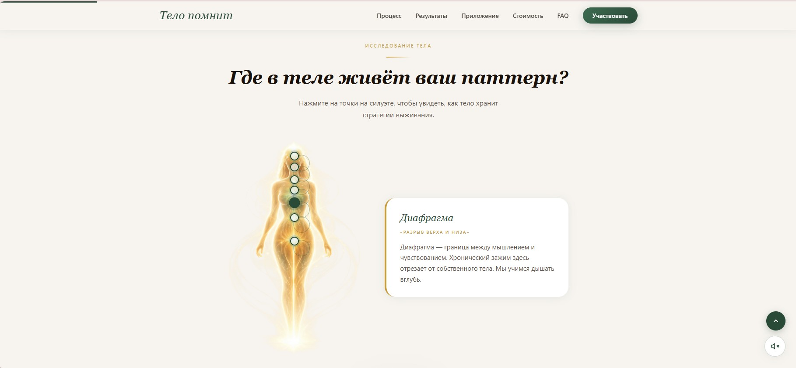

Лендинг — telo-pomnit.ru
Я создала полный продукт —
Я создала полный продукт —
от продажи до поддержки
Лендинг + Telegram Mini App + Backend. Всё связано в одну цепочку: человек приходит на сайт, читает, проходит самодиагностику и оплачивает прямо там. После оплаты автоматически приходит письмо — и открывается доступ в приложение.
Интерактивная карта тела
Дышащая анимация
Квиз-самодиагностика
Фоновая музыка
Оплата через ЮКасса
Публичная оферта + ИНН
